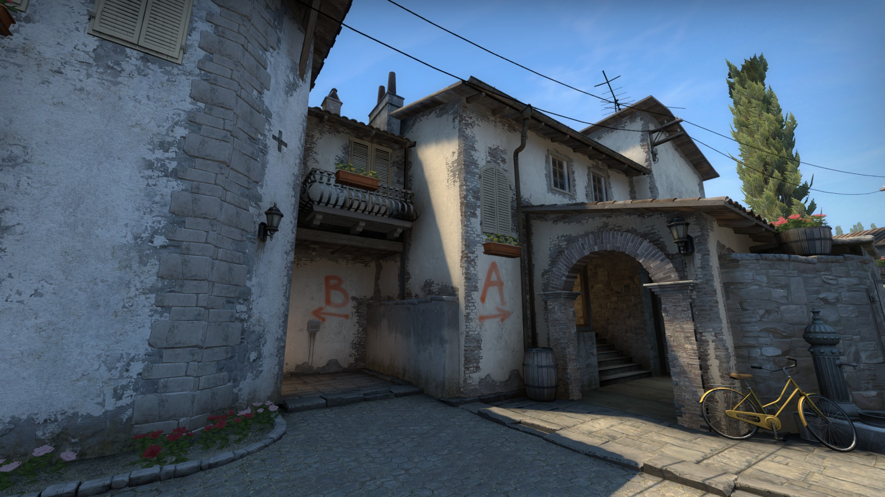

При обновлении карты мы стремились:
Улучшить видимость на всей карте
Упростить перемещение группами
Отладить процесс игры, прислушавшись к сообществу.
Теперь Inferno входит в список карт резерва, и мы надеемся, что вы сыграете на ней и сообщите ваше мнение. Ниже мы вкратце расскажем о карте и выделим основные зоны, в которых произошли изменения. С помощью ползунков вы сможете сравнить старое обличье Inferno с новым. Точка закладки А
Раньше эта точка казалась недостижимой для террористов: у защитников был огромный выбор выгодных позиций, а слиться с окружением не составляло труда.

Мы в первую очередь хотели сделать возможные оборонительные позиции более очевидными для нападающих и дать им больше возможностей для применения дымовых и ослепляющих гранат.
Мы убрали навесную крышу, чтобы точка закладки была лучше освещена. Это изменение также открывает обзор между библиотекой и балконом, позволяя использовать снайперскую винтовку с этих позиций и бросать гранаты прямо на точку.
Небезызвестный грузовик, служивший своеобразным подъемом на балкон, мы заменили на телегу с сеном. Она ясно дает понять свое назначение на карте и позволяет быстрее забираться на балкон.
На возвышении мы сменили изгородь и убрали некоторые элементы декора, чтобы эта защитная позиция была более открытой. Теперь заметить игрока на ней гораздо легче.


Помимо самой точки закладки, изменился и коридор, ведущий на балкон. Мы расширили его, чтобы атакующая команда могла бросать гранаты еще до своего обнаружения. Это должно оживить засевших в «песке» защитников.
Также мы решили избавиться от темной комнаты. Она была слишком удобной в плане защиты и вынуждала террористов тратить гранаты еще на подходе к точке закладки.
Вместо нее мы добавили небольшую нишу, как это было в Counter-Strike 1.6. На такой позиции гораздо проще справиться с врагом, но она всё еще может быть полезна для обороняющихся.
Точка закладки В
Эта точка, как и ведущие к ней пути, вызвали наибольшие дискуссии в рядах сообщества.

Проход к точке мы сделали более открытым, что позволяет нападающим передвигаться свободнее. Однако, как и в любом другом открытом пространстве, теперь здесь весьма эффективны гранаты, так что террористам нужно быть предельно осторожными.
Старую машину в конце улицы мы заменили на менее прочные деревянные укрытия, которые можно прострелить насквозь.
Защитники могут выглянуть из-за новой стены в конце улицы, подсадив своего игрока, но нападающие могут проверить позицию за ней обычным прыжком.
Мы расширили подход к точке закладки, а также добавили новые укрытия для нападающих террористов.
Изменениям подверглась и геометрия фоновых объектов: спецназ больше не сможет кидать гранаты на точку В из других частей карты.
Сама точка закладки тоже не осталась без внимания. Мы убрали щель между контейнерами и колонной, добавили возможность самостоятельно забраться на ящики возле входа на точку и постарались улучшить видимость на ней в целом.

Центр
Крупнейшее изменение центра карты — подземный ход, соединяющий две центральные улицы, стал выше. Для того чтобы попасть в него с основной центральной улицы, всё еще надо присесть, но примерно в середине у вас появится возможность встать.
Еще одно небольшое, но значимое изменение: мы удалили фонарный столб, годами собиравший миллионы пуль, и теперь у вас меньше оправданий для промаха.
БАЗА ТЕРРОРИСТОВ
Наконец-то появился дополнительный выход с базы террористов, ведущий на вторую центральную улицу.


В ЗАКЛЮЧЕНИЕ
Несмотря на изменения и улучшения карты, игровой процесс на ней практически не изменился. Выпустив бета-версию Inferno, мы получили ценные мнения игроков и на их основе исправили многие ошибки. Спасибо всем, кто принял участие. Мы продолжим наблюдать за отзывами, дорабатывая и улучшая карту.
Спешите посетить новую версию Inferno и поделиться с нами своим мнением! Надеемся, вам понравится!